채널: 레디포그로스 (Ready For Growth) | 길이: 20:38 | 날짜: 2026-01-23
3:7 아웃풋 법칙으로, 30분 입력이면 70분 출력(작성/발행/제작)을 강제하라는 것입니다. “깨달음 일기” 대신 “실행 일지·실패 데이터 기록”으로 프레임을 전환하라고 구체화합니다.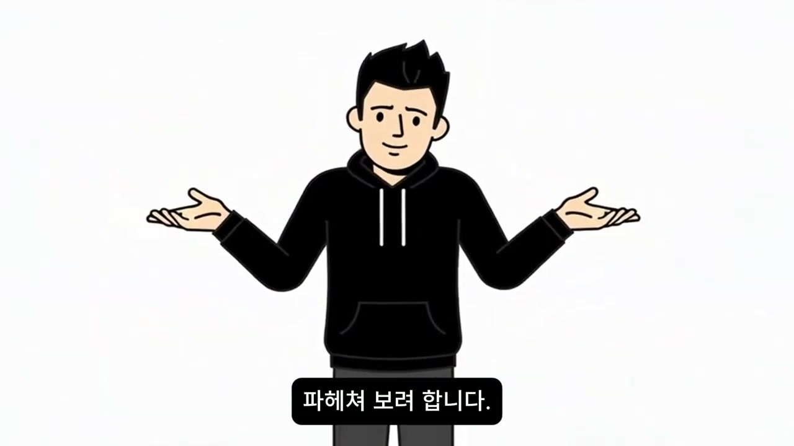
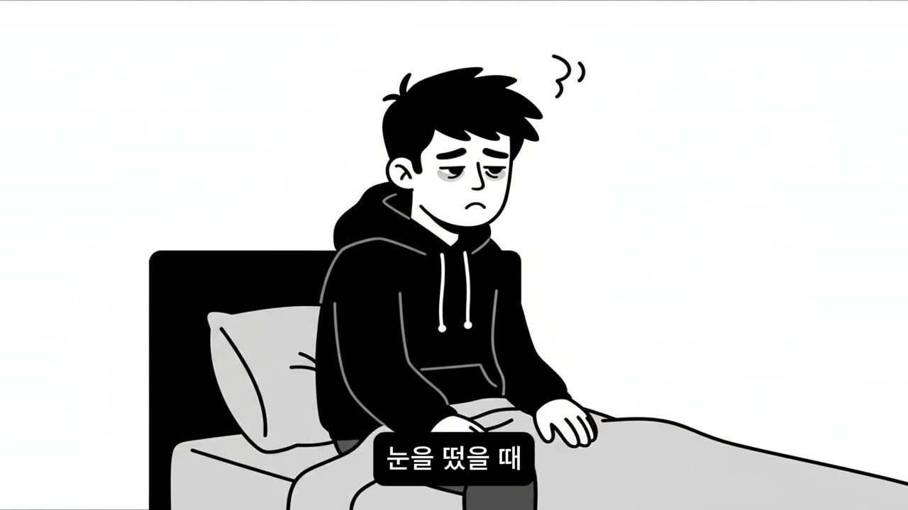
발화자는 자신을 “데이터+심리학 기반 성장전략 큐레이터”로 규정하며 권위 프레임을 먼저 세웁니다. 이어 “왜 강의를 들을수록 삶이 망가지는가”라는 역설적 질문을 던져, 시청자의 기존 자기계발 상식을 의도적으로 깨뜨립니다.
도입에서 이미 목표가 명확합니다. 영상 종료 시점에 “지식중독의 굴레를 벗어나 뇌 구조를 재설계”하겠다는 약속을 제시하고, 밤 12시 스마트폰으로 성공 강연을 소비하는 장면을 소환해 시청자의 생활 리듬·습관을 정확히 찌릅니다.
시각적으로는 흑백 캐릭터의 단순한 제스처(양손을 벌린 설명 자세)에서 시작해, 다음 장면에서 피곤한 표정으로 침대에 앉아 있는 모습으로 전환됩니다. 자막의 “다음 날 아침” 문맥과 함께, 지식 소비 후 무기력한 현실 복귀를 즉시 이미지화한 구성입니다.
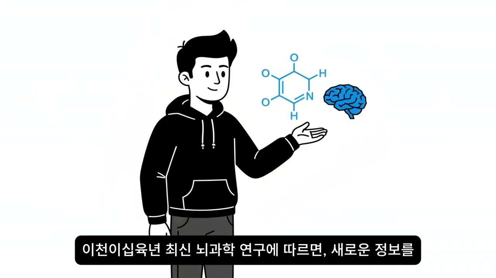
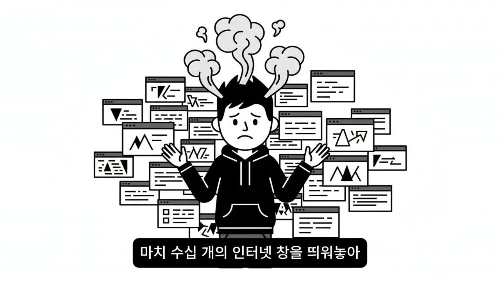
핵심 주장: 강의 탐닉의 진짜 목적은 성장이 아니라 죄책감 완화입니다. 발화자는 이를 “아무것도 하지 않는 자신을 견디기 위한 진통제”라고 명명합니다.
이어 2026년 최신 뇌과학 연구를 인용해, 새 정보 습득 시 분비되는 도파민 쾌감이 실제 행동 성취의 쾌감과 유사하다고 설명합니다. 이때 뇌는 성장을 한 것이 아니라 “성장하고 있다는 느낌”에 중독된 상태가 된다는 결론으로 연결됩니다.
INFP/INFJ에게는 이 메커니즘이 더 치명적이라고 좁혀갑니다. 분석은 깊지만 실행이 늦어지는 성향, 완벽 전략 강박, 전두엽 기능 저하, 실행 버튼 미작동이라는 연쇄를 제시합니다.
시각 요소도 이를 정확히 보조합니다. 화학 구조식+뇌 아이콘으로 생물학적 권위를 부여하고, 큰 물음표·머리 위 난삽한 낙서(인지 혼선)로 ‘분석 과잉’을 상징합니다.
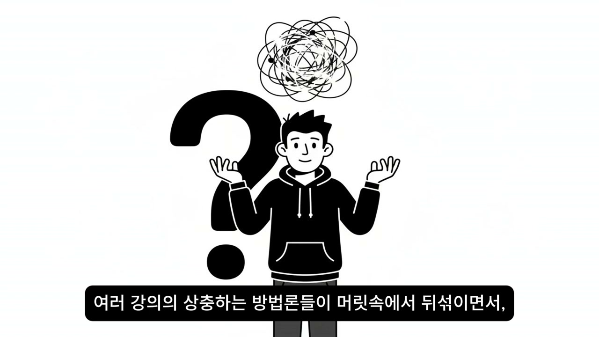
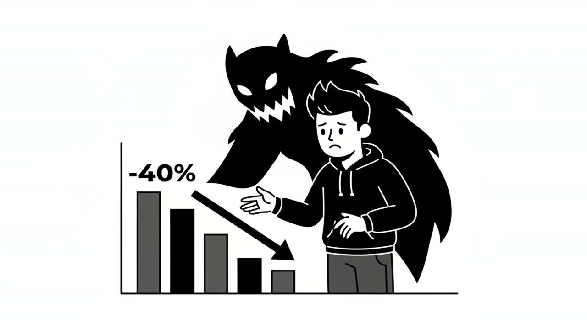
발화자는 시장 메시지의 분열을 지적합니다. A는 A대로, B는 B대로 정답을 외치고, 광고는 “이것만 알면 인생이 바뀐다”며 결핍을 지속 자극한다는 구조입니다.
그 결과 여러 강의의 상충 방법론이 머릿속에서 뒤섞이며 실행 알고리즘이 꼬이고, 사람은 “아직 배움이 부족하다”는 기만적 결론으로 다시 입력을 늘립니다.
은유가 선명합니다. “수영 교본 10권 완벽 암기 후 입수하겠다”는 비유로 준비중독을 꼬집고, 2023년 하버드 비즈니스 리뷰 인용으로 정보 과잉이 실행력을 40% 낮춘다고 수치화합니다.
시각적으로는 수십 개 브라우저 창과 머리의 증기(과열), 하향 막대그래프와 -40% 표기, 뒤에서 덮치는 괴물 그림자(불안·회피 심리)가 결합돼 메시지를 강하게 고정합니다.
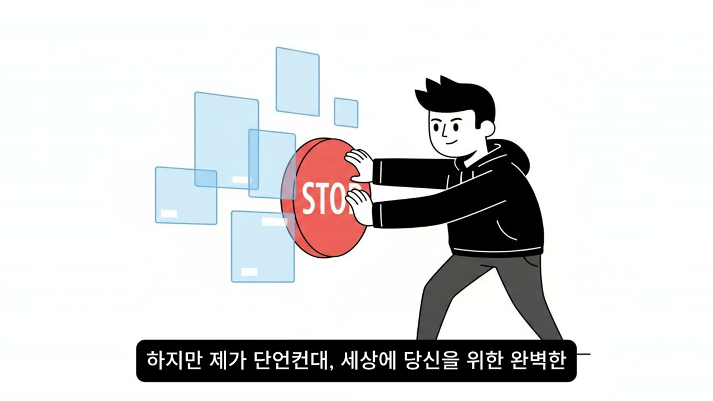
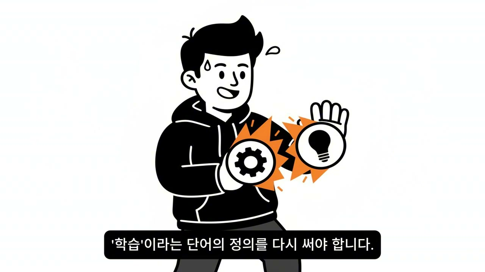
여기서 영상의 패러다임 전환이 시작됩니다. “지금까지 들은 강의가 성장의 장애물일 수 있다”는 질문을 던지고, 완벽한 정답 강의는 존재하지 않는다고 단언합니다.
처방은 급진적입니다. 더 나은 강의를 찾는 대신 지금 당장 멈출 용기, 그리고 인풋 중심에서 아웃풋 중심 데이터 생성으로의 전환입니다.
학습 정의도 재작성합니다. 학습은 정보를 넣는 행위가 아니라, 꺼내어 현실과 충돌시키는 마찰에서 생긴다는 주장입니다.
시각적으로는 떠다니는 창들을 STOP 버튼으로 막는 장면이 “입력 차단”을 직접 표현하고, 큰 그림자와 작은 자기상이 공존하는 이미지가 ‘겉자부심 vs 내면 회피’의 이중 심리를 상징합니다.
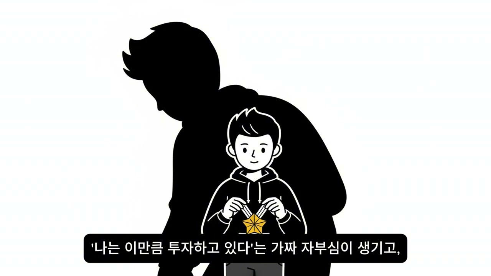
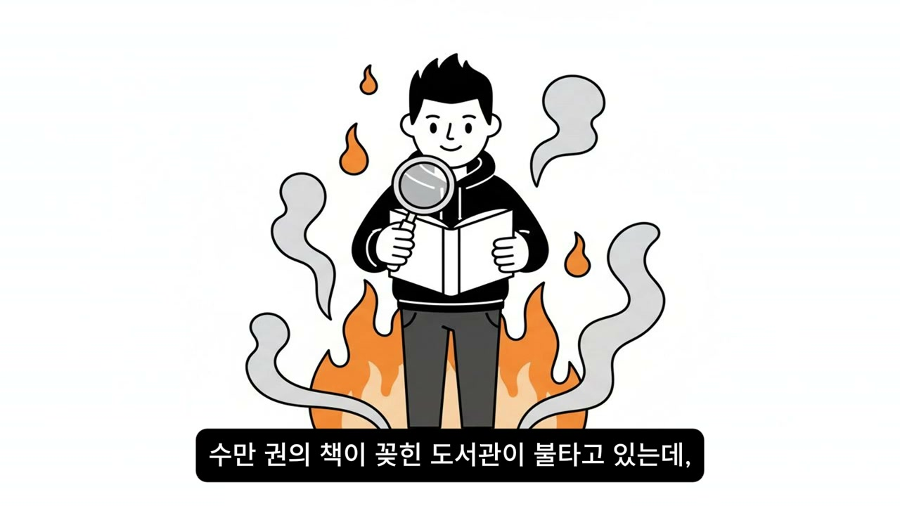
강의 결제는 노력 증거가 아니라 심리적 도피라는 진단이 강화됩니다. 돈을 쓸수록 “나는 투자하고 있다”는 자부심이 생기고, 동시에 실행하지 않는 자기혐오가 내부에서 증식한다는 구조입니다.
이 반복이 누적되면 학습된 무기력으로 이동하고, 많이 배울수록 오히려 아무것도 못하는 역설적 상태가 된다고 설명합니다.
이어 전두엽 과부하와 도파민 회로 고착을 제시하며, “불타는 도서관에서 책 고를 분석만 하다 질식하는 사람” 비유를 사용합니다. 이는 정보선별 자체가 생존행동을 대체하는 비극을 압축한 장면입니다.
시각 자료는 전구·기어 충돌(생각과 실행의 미스매치), 불타는 배경 속 독서 캐릭터(우선순위 붕괴)를 통해 텍스트의 은유를 정밀 재현합니다.
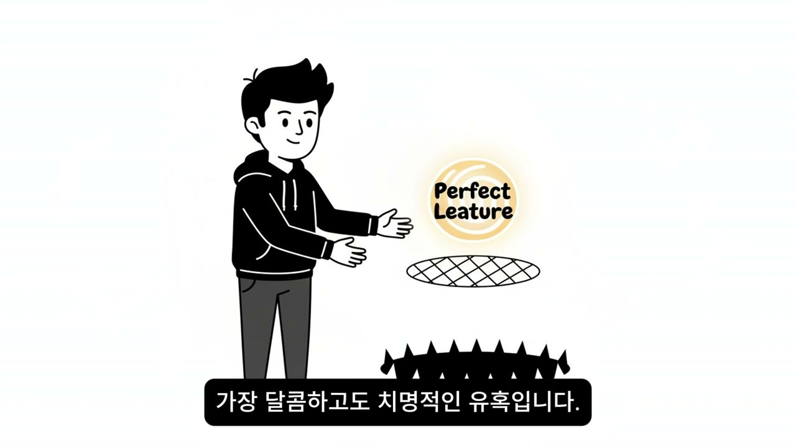
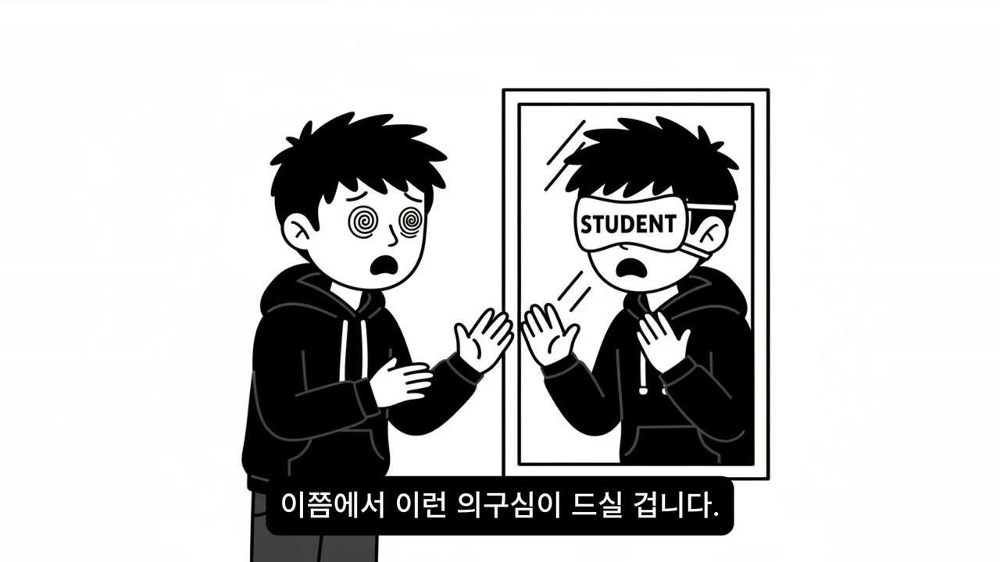
“강의 끊기=문제해결”이 아니라는 보강 논리입니다. 깊은 층위에는 “이 강의만 들으면 시작할 수 있다”는 잠재의식 유혹이 있고, 이 유혹이 가장 달콤하면서도 치명적이라고 설명합니다.
2026년 심리 보고서 인용으로 정체된 사람들의 공통점을 “준비를 행동으로 착각”하는 데서 찾습니다.
INFP/INFJ는 특히 완벽하지 않은 결과의 수치심을 피하기 위해 ‘공부 중’이라는 방패를 든다고 분석합니다. “나는 아직 배우는 중이라 실패가 아니다”라는 자기기만 논리가 그 방패입니다.
시각적으로 Perfect Leature(오탈자 포함)라는 빛나는 구체가 함정 위에 떠 있고, 거울 속 캐릭터가 STUDENT 안대를 쓰고 있는 장면이 “학습 정체성에 숨는 상태”를 강하게 상징합니다.
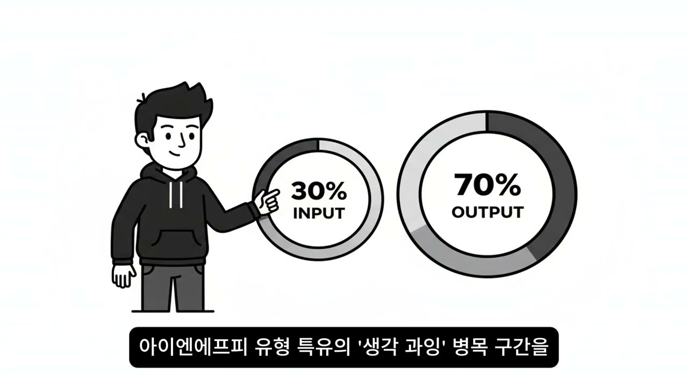
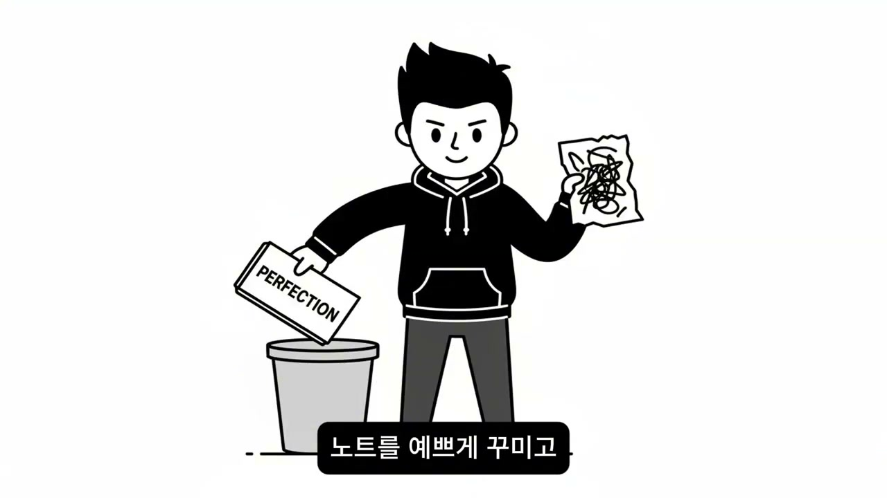
영상은 여기서 실천 규칙을 수치로 제시합니다. 30% INPUT / 70% OUTPUT, 즉 30분 배웠다면 70분은 제작·발행·공유에 써야 한다는 강제 규칙입니다.
사례도 구체적입니다. AI 마케팅 강의를 봤다면 노트 꾸미지 말고 즉시 블로그 광고 카피 1개를 발행하라고 지시합니다.
핵심 교정점은 “정리=실행” 착각 해체입니다. 예쁜 노트, 아이패드 필기, 정돈된 기록은 자기만족일 뿐 현실을 바꾸는 데이터가 아니라고 못 박습니다.
시각 자료로는 도넛 차트(30% INPUT, 70% OUTPUT)와 PERFECTION을 쓰레기통에 버리는 장면이 직접적인 행동 명령으로 기능합니다.
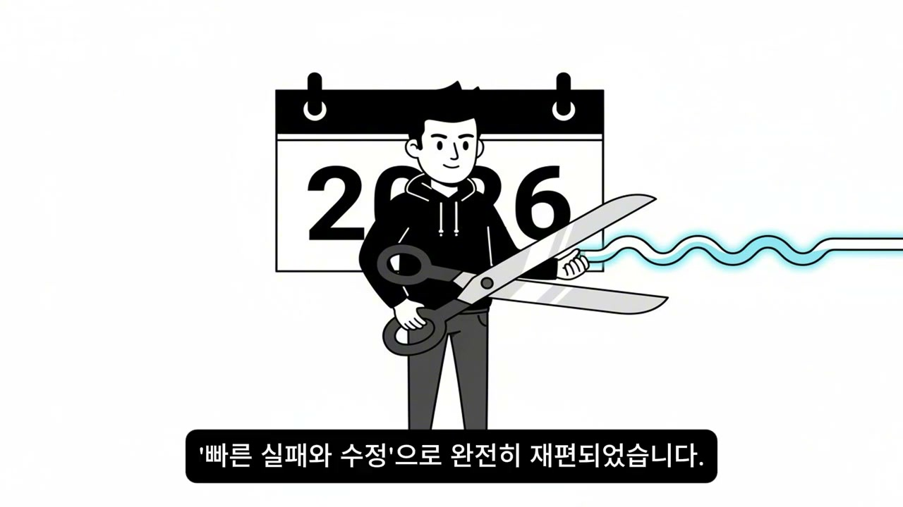
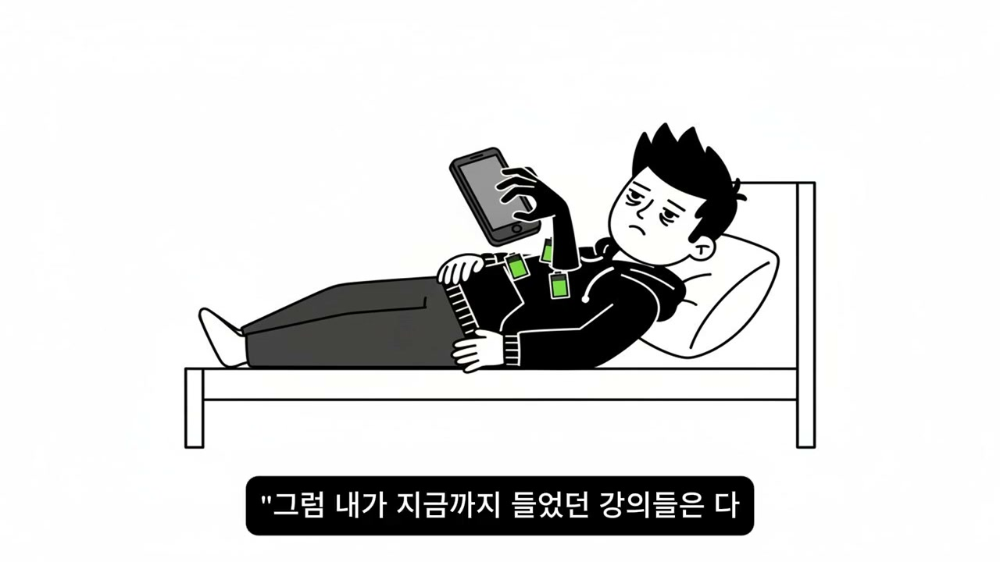
발화자는 “초라한 첫걸음 1개가 고가 강의 100개보다 뇌회로 재구성이 빠르다”고 주장합니다. 그리고 날짜를 명시해(2026-01-23) 성공공식이 완벽 준비에서 “빠른 실패와 수정”으로 재편됐다고 말합니다.
이후 두 번째 전술로 정보 유입 경로 차단을 제시합니다: 자기계발 채널은 3개만 남기고 삭제, 선택지 축소 시 실행력 40% 이상 향상.
취침 전 알고리즘 추천 “성공 TOP 8 영상”은 도파민 절임 상태를 만들어 다음 날 에너지를 빼앗는 주범이라고 지적합니다. 동시에 과거 강의는 쓰레기가 아니라 재료이므로 지금 요리를 시작해야 한다는 보정도 제공합니다.
시각적으로는 침대에서 폰을 보는 장면(에너지 누수), 2026 달력 앞 거대한 가위(유입선 절단)가 전술을 명확히 시각화합니다.
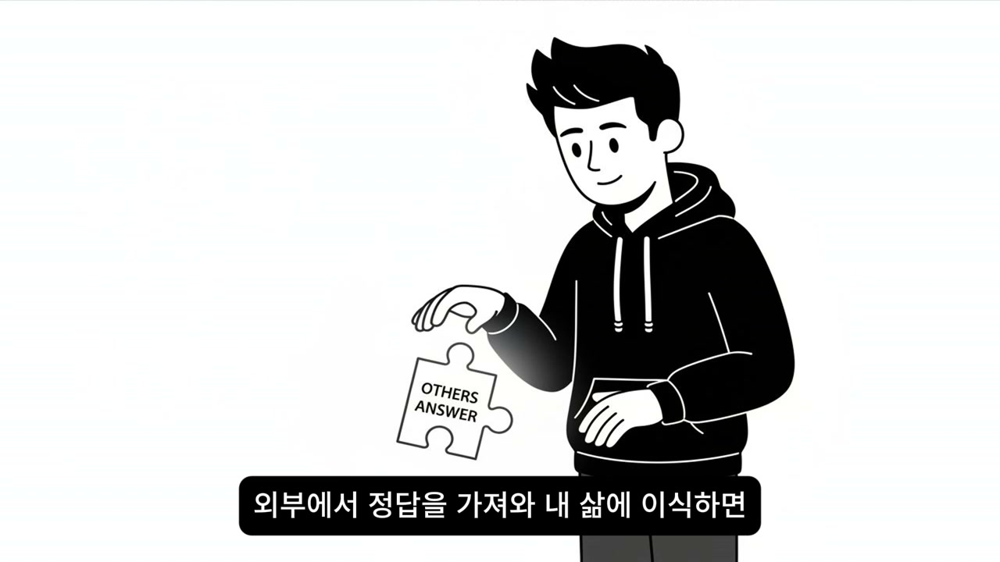
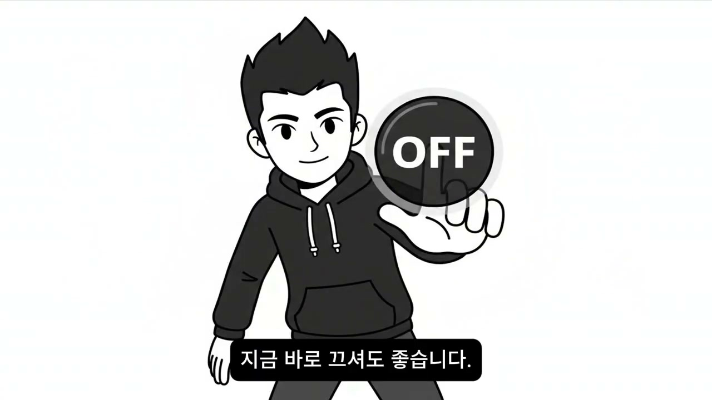
핵심 질문은 “왜 타인의 성공공식에 집착했는가”이며, 답은 자기불신입니다. 외부 정답을 삶에 이식하면 무통성공이 가능하다는 희망을 비겁한 환상으로 규정합니다.
성장은 객관식 정답 맞히기가 아니라, 자신의 오답/올답을 써가며 데이터 축적하는 주관식 여정이라는 정의로 재정리됩니다.
행동 촉구 강도도 매우 높습니다. 지금 영상을 끄고, 책상을 정리하고, 단 한 문장이라도 자기 것을 쓰라고 지시합니다.
시각 자료는 OTHERS ANSWER 퍼즐 조각(외부정답 의존)과 KNOWLEDGE DETOX GUIDE 태블릿(탈출 도구)을 배치해, 문제 진단과 해결 통로를 한 프레임에서 연결합니다.
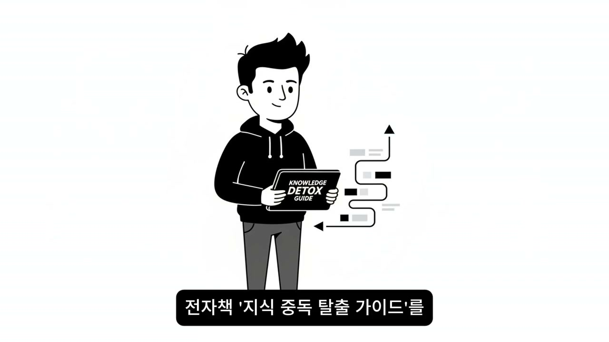
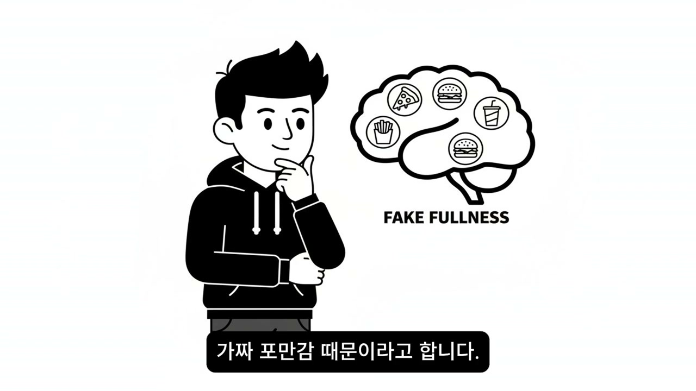
이 구간은 전략 요약과 상품 안내가 결합됩니다. 실행 템플릿·INXX 로드맵·전자책(고정댓글)을 제시하지만, “도구만으로 해결되지 않는다”는 안전장치를 동시에 둡니다.
진짜 문제는 지식의 저주가 만든 심리적 관성이라는 진단이며, 2026 행동심리 연구를 근거로 “정보를 알고 있다는 감각의 가짜 포만감”을 핵심 리스크로 명시합니다.
INFP/INFJ는 이해를 변화로 착각하기 쉽고, 통찰 문장에 감정 고조가 생길 때 뇌가 이미 목표 달성으로 오판해 도파민을 분비한다고 설명합니다.
시각 자료는 OFF 버튼(즉시 차단)과 FAKE FULLNESS 텍스트+패스트푸드 뇌 아이콘(인지적 포만감의 허상)으로 메시지를 직관화합니다.
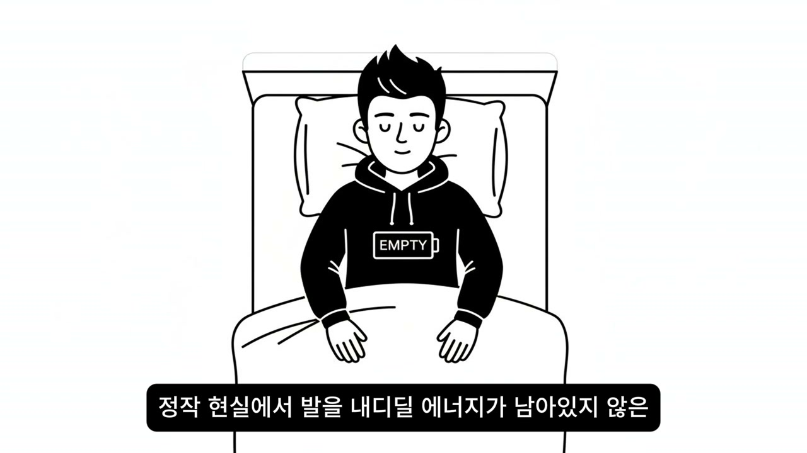
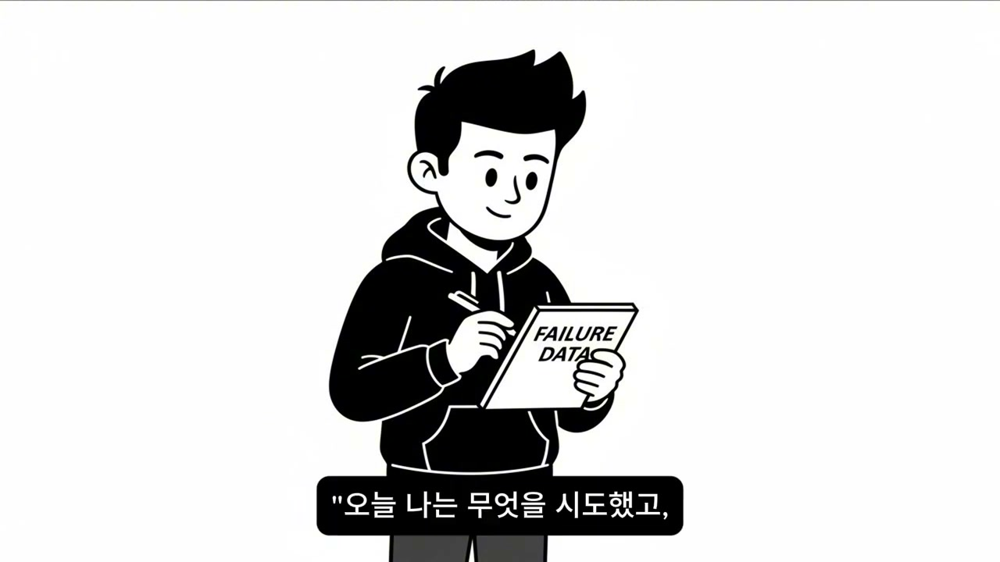
강의 직후 “세상을 다 얻은 느낌”과 다음날 무기력의 원인을 과학적으로 연결합니다. 뇌가 이미 보상을 선지급 받아 현실 행동에 쓸 에너지가 남지 않는다는 논리입니다.
대응책으로 “인지적 부활(부하)”을 의도적으로 높이자고 제안하며, 2025 하버드 비즈니스 리뷰 생산성 보고서를 인용해 ‘비판적 재구성+직접 출력’ 시 기억 유지율·실행력이 40% 이상 향상된다고 강조합니다.
생활 적용법은 실행일지화입니다. “오늘 깨달았다”가 아니라 “오늘 무엇을 시도했고 어떤 실패 데이터를 얻었는가”를 기록하라는 명령입니다.
시각적으로 EMPTY 배터리를 가슴에 단 채 누운 캐릭터(고갈), FAILURE DATA 노트 기록(회복 프로토콜)이 정확히 대응됩니다.
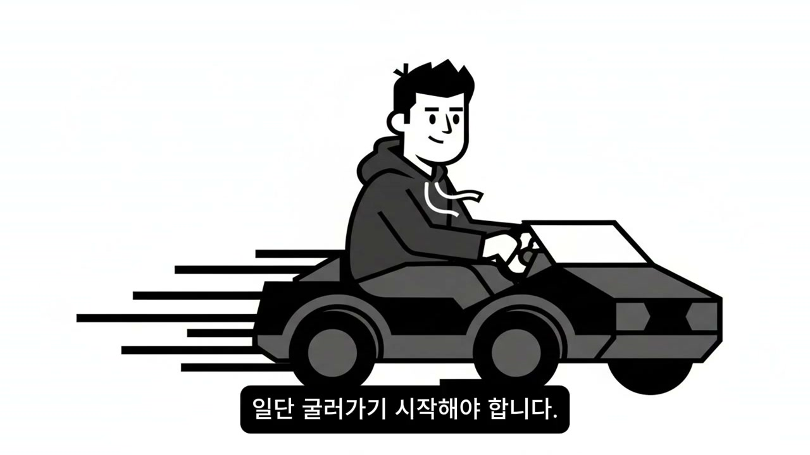
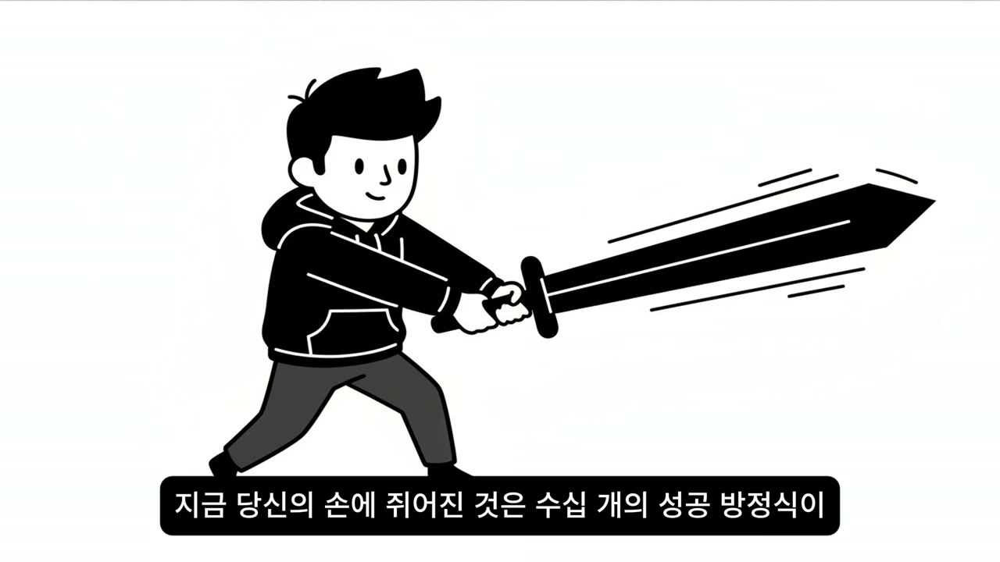
INFP 병목을 “타인의 시선 공포 + 이상 미달 자괴감”으로 정의하고, 이를 깨기 위해 의도적으로 완성도 10% 결과물을 공개하라고 처방합니다.
핵심은 최적화 탐색을 멈추는 것입니다. 수십 창을 띄워 전두엽 과열시키는 대신, 브레이크 고장차처럼 먼저 굴러가며 충돌 데이터를 얻으라는 프레임입니다.
“행동 많이 해라” 수준의 조언을 넘어, 뇌구조를 지식 소비자에서 데이터 생산자로 재배선하라는 명령으로 격상됩니다.
시각 자료도 동일합니다. 속도선이 그어진 자동차(선행동)와 거대한 칼을 휘두르는 캐릭터(결단·실행 개시)가 동기화됩니다.
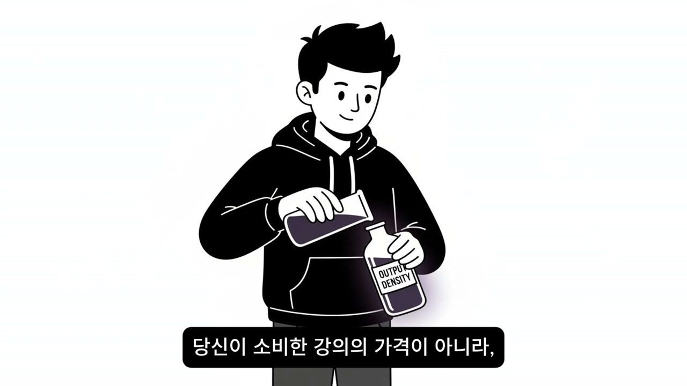
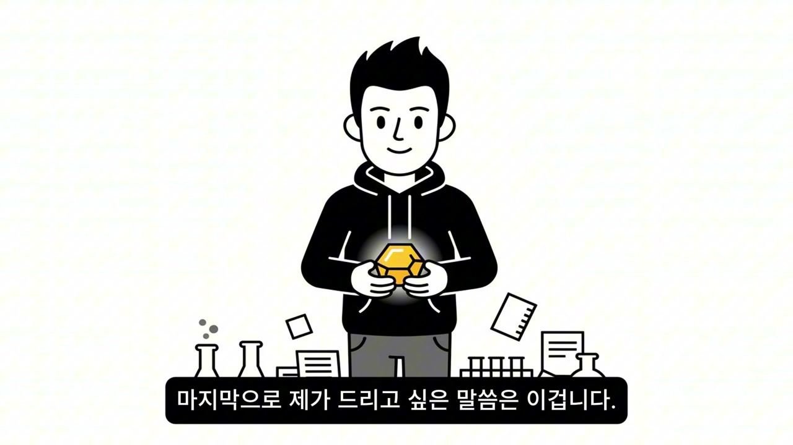
이 구간에서 성공 정의가 확정됩니다. 레디포그로스식 성공은 완성 상태가 아니라 “데이터의 축적”이며, 개인가치는 강의 지출액이 아니라 세상에 낸 아웃풋의 농도로 측정된다고 말합니다.
“화면을 끄고 현실을 켜라”는 문장이 반복되며, 이를 단순 조언이 아닌 뇌구조 변경 설계도의 마지막 단계로 격상합니다.
지식 도서관의 관람객에서 실행 실험실의 과학자로 전환하라는 비유도 이 구간 핵심입니다. 실험실은 지저분하고 위험하지만 진짜 금은 그곳에서만 나온다고 못박습니다.
시각 자료는 OUTPUT DENSITY 병(가치 지표의 전환)과 가슴의 푸른 빛(자기 주체성·내적 점화)을 통해 메시지를 응축합니다.
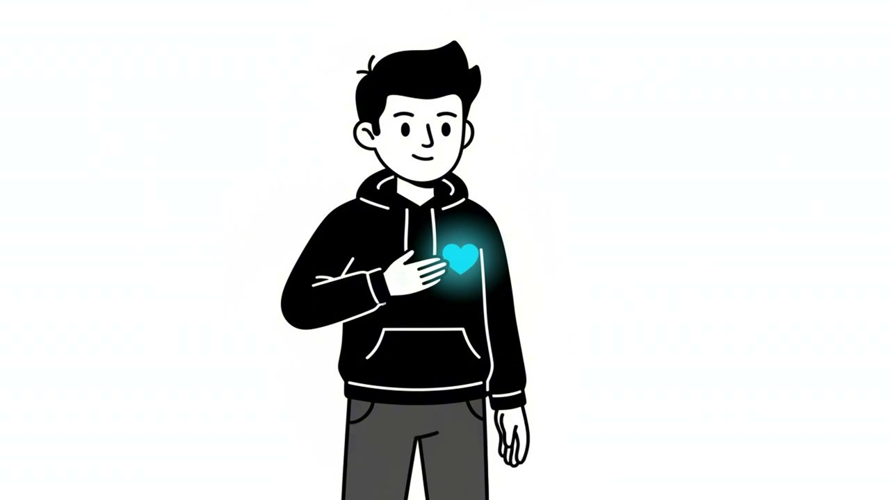
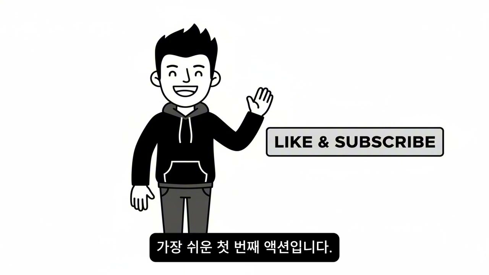
마지막 선언은 단호합니다. 강사·고가 컨설팅·1% 비법도, 시청자가 실제로 타이핑·만남·제작을 하지 않으면 “디지털 쓰레기”라는 결론입니다.
동시에 감정적 신호 해석을 제시합니다. 이 영상이 불편했다면 그 불편함이 변화 준비 신호이며, 완벽하지 않아도·초라해도 일단 시작하라는 실행 명령으로 봉합합니다.
엔딩은 콘텐츠 퍼널 구조를 분명히 갖습니다. 고정댓글 리서치 리포트, INXX 맞춤 데이터 시트, 구독·좋아요(가장 쉬운 첫 액션), 다음 영상의 실행력 200% 향상 예고가 연속 배치됩니다.
시각 자료도 LIKE & SUBSCRIBE 버튼과 실험 장비 앞의 빛나는 핵심 자원(보석)을 배치해, “지식→실험→증명” 브랜드 내러티브를 마무리합니다.
“당신이 강의를 듣고 지식을 탐닉하는 진짜 이유는 성장을 위해서가 아닙니다.”
“당신의 뇌는 지금 성장을 하고 있는 게 아니라 성장을 하고 있다는 기분에 중독되어 있는 것입니다.”
“완벽한 전략을 짜야 한다는 강박이 결국 실행 버튼을 누르지 못하게 만듭니다.”
“정보의 과잉은 실행력을 40%나 감소시킨다.”
“당신에게 필요한 것은 더 나은 강의가 아니라 지금 당장 모든 것을 멈추는 용기입니다.”
“성장의 핵심은 인풋이 아니라 아웃풋을 통한 데이터 생성에 있습니다.”
“완성도를 쓰레기통에 던져버리는 용기.”
“당신의 초라한 첫걸음이 100만원짜리 강의 100개보다 뇌회로를 더 빨리 재구성합니다.”
“자기계발 채널은 단 3개만 남기고 모두 삭제하십시오.”
“강의들은 쓰레기가 아니라 재료다. 다만 썩기 전에 지금 요리하라.”
“진정한 성장은 객관식이 아니라 나만의 데이터를 쌓는 주관식 여정입니다.”
“오늘 나는 깨달았다가 아니라, 오늘 무엇을 시도했고 어떤 실패 데이터를 얻었는가를 기록하라.”
“의도적으로 완성도 10% 결과물을 세상에 내놓는 연습을 하십시오.”
“당신의 가치는 소비한 강의 가격이 아니라 아웃풋의 농도로 결정됩니다.”
“브레이크를 밟는 대신 엑셀을 밟으십시오. 완벽하지 않아도, 초라해도, 일단 시작하십시오.”
이 영상은 자기계발 콘텐츠 소비를 “입력 중독-도파민 선보상-실행 고갈”의 악순환으로 규정하고, 해법을 “출력 강제-실패 데이터화-입력 통제”로 제시한 강한 행동주의 선언입니다. 특히 INFP/INFJ를 반복 호명해 완성주의·자기비판·평가불안을 실행 병목으로 특정하고, 이를 깨기 위한 저완성 공개 전략(10% 공개)과 3:7 규칙을 실천 프레임으로 제공합니다.
실용적으로는 다음 네 가지가 핵심 적용 포인트입니다.
전망 측면에서, 이 메시지는 “더 좋은 정답 찾기” 시장 논리와 정면으로 충돌합니다. 다만 영상 내 연구 인용은 연도·매체 중심으로 제시되고 세부 논문 식별 정보가 생략되어 있으므로, 시청자는 숫자(40%, 200% 등)를 절대치로 받아들이기보다 행동 설계 원칙으로 해석하는 것이 안전합니다. 그럼에도 전체 메시지의 실천 방향성은 일관됩니다: 지식 소비자의 자리를 떠나, 데이터 생산자로 뇌를 재배선하라.
댓글
GitHub 이슈 기반 댓글 시스템입니다.